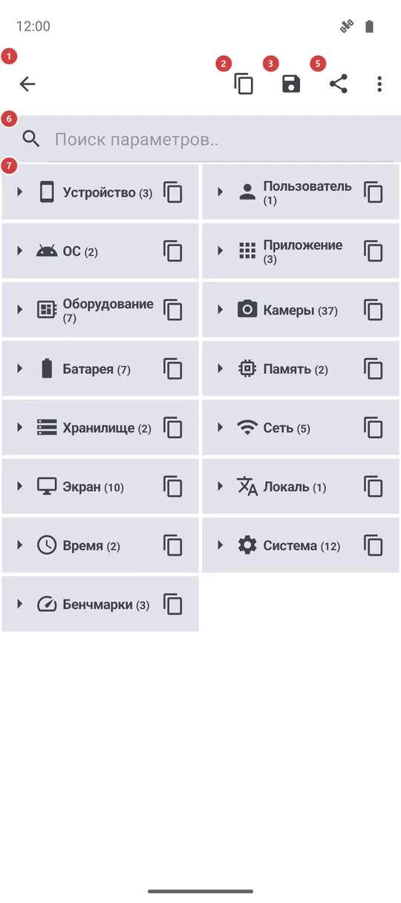
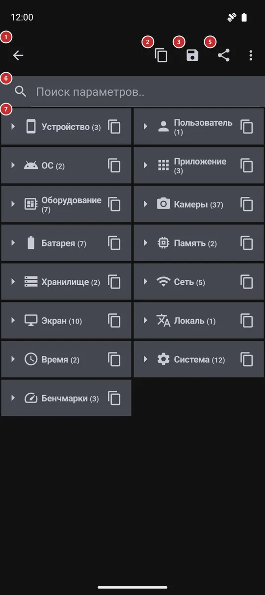

Сведения о системе
Для чего этот экран
Понятный отчёт о вашем телефоне и об этом приложении: устройство, версия Android, батарея, память, хранилище, сеть, экран и многое другое. Его можно искать, копировать отдельное значение или весь отчёт, сохранить в файл или отправить - именно это обычно просит тот, кто помогает вам с проблемой.


Порядок действий
- Откройте экран и немного подождите, пока соберётся отчёт. Группы появляются свёрнутыми, по одной строке, с числом значений внутри.
- Нажмите группу 7, чтобы раскрыть её. «Развернуть все» 4 раскрывает все группы сразу, а та же кнопка потом их сворачивает. Приложение запоминает, какие группы вы оставили открытыми.
- Чтобы найти одно значение, введите запрос в поле поиска 6. Все группы с совпадениями раскроются, а на экране останутся только подходящие строки.
- Нажмите строку 7, чтобы скопировать это значение, или кнопку копирования в строке группы, чтобы скопировать всю группу.
- Чтобы передать всё, пользуйтесь «Копировать» 2, «Сохранить» 3 или «Поделиться» 5. Сначала просмотрите отчёт: в нём есть технические идентификаторы вашего устройства и сети.
Элементы
Заголовок
1Стрелка назадЗакрывает экран и возвращает туда, откуда вы пришли.
В заголовке написано название экрана, «Сведения о системе», а стрелка перед ним возвращает назад, например в меню программ или в настройки. Ничего не теряется: при следующем открытии экрана отчёт собирается заново.
Действия с отчётом
2КопироватьКопирует весь отчёт в буфер обмена простым текстом.
Пригодится, чтобы вставить отчёт в чат или письмо. Текст перечисляет группы в том порядке, в каком они на экране, в том числе свёрнутые и скрытые поиском. В нём все значения, которые может показать экран, поэтому прочитайте его, прежде чем вставлять в публичное место.
3СохранитьЗаписывает весь отчёт в текстовый файл в папке «Загрузки».
Файл называется fms_system_info плюс дата и время, а сообщение подскажет, куда он попал. Если записать файл не удалось, сообщение скажет об этом, и ничего не сохранится. Используйте, когда отчёт нужно приложить к сообщению, а не вставить в текст.
4Развернуть все / Свернуть всеРаскрывает все группы сразу или сворачивает их все.
Значок и название зависят от состояния: когда всё раскрыто, кнопка сворачивает группы, иначе - раскрывает все. Выбор запоминается до следующего посещения. На узком экране кнопка может оказаться в меню «Ещё».
Поиск и список
6Поиск параметров..Оставляет в отчёте только параметры, подходящие под ваш запрос.
Поиск идёт по названиям групп, названиям значений и самим значениям без учёта регистра. Группы с совпадениями раскрываются на время поиска и не меняют то, что вы оставили открытым. Если ничего не найдено, список так и скажет. Очистите поле, чтобы вернуть свои группы.
7Группы и параметрыСам отчёт - группы, которые можно раскрывать и сворачивать.
У каждой группы есть значок, название и число значений. Нажмите строку, чтобы раскрыть или свернуть группу; маленькая кнопка копирования справа копирует только эту группу, а сообщение называет её. В раскрытой группе значения идут строками из названия и значения; нажмите строку, чтобы скопировать её как название: значение. В альбомной ориентации свёрнутые группы стоят в четыре столбца вместо двух.
Группы такие: «Устройство», «Пользователь», «ОС», «Приложение» (версия, сборка и редакция), «Оборудование» (процессор и чип, ядро, версия графики, предел памяти приложения), «Камеры» (что заявляет телефон и что из этого сделало приложение), «Батарея», «Память», «Хранилище», «Сеть» (тип подключения, тарифицируемость, VPN, режим полёта и локальный адрес), «Экран», «Локаль», «Время», «Система» (список языков, патч безопасности, отпечаток сборки, установщик, даты установки) и «Бенчмарки». Группа, которой нечего показать, не выводится.
«Бенчмарки» - короткие тесты скорости памяти и хранилища, которые запускаются при каждом открытии экрана, поэтому цифры приблизительные и от раза к разу отличаются. В редакции noLegal ниже идут ещё семь групп: «ОС и безопасность», «Специальные разрешения», «Установщик и подпись», «Встроенные среды», «Монтирования и хранилище», «Сетевая диагностика» и «Ресурсы процесса».